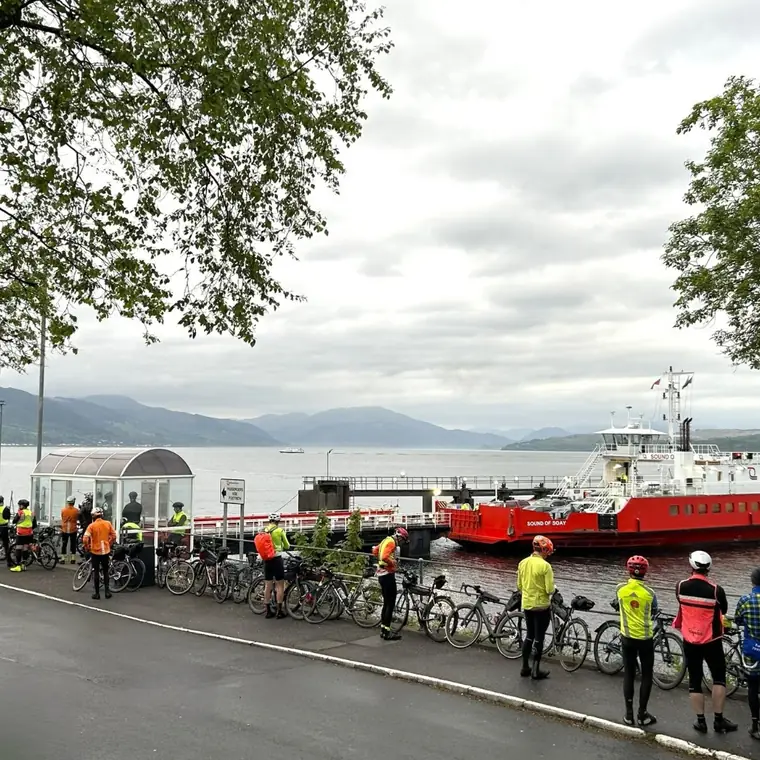

Controls
Below is the provisional list of controls. Most are confirmed and, to be honest, there isn’t really a lot of other options for most of the route.
The event controls are mainly small to medium village halls with an occasional larger facility. In addition to this there will be some ‘information’ controls where you will have to answer a question, or other checkpoints without event facilities. There may be one or more ‘secret’ controls but these will just be checkpoints.
It is planned that E-Brevet will be available as an option but you will still need to visit each of the controls in order. It makes sense to visit the event controls when they are open as that’s where there will be food and you can rest. If you’re outside the control opening times then you can still complete the route as long as you finish in time. The control opening times have been designed to accommodate most riders, particularly ‘full value’ riders, to enable them to finish in time.
Subject to final entry numbers we may add some additional controls, particularly in the first 3 days to accommodate the numbers. This will very much depend on the budget available and final entry numbers. We won’t have fewer controls but there may be a few more.
Facilities
- Food
- Beds
- Showers
- Bag drop
Full control information sheet
All details for every control, including addresses, times, and facilities (PDF, 59 KB).
Opening times
Start: Monday 31 July 2028, 5pm–9pm. Times below are the condensed web version of the control information sheet and are subject to change and final confirmation.
| Control | Distance | Opens | Closes | Facilities |
|---|---|---|---|---|
| RegistrationCrichton Central, Bankend Road, Dumfries DG1 4TA | Start | Mon 31 Jul11:00 | Mon 31 Jul20:00 |
|
| StartCrichton Central, Bankend Road, Dumfries DG1 4TA | Start | Mon 31 Jul17:00 | Mon 31 Jul21:00 |
|
| DoachCheckpoint – B736, Palnackie to Castle Douglas road | 38km | Mon 31 Jul18:00 | Mon 31 Jul23:00 | No event facilities |
| KirkmichaelCommunity Shop and Café, Patna Road, Kirkmichael KA19 7PJ | 117km | Mon 31 Jul21:00 | Tue 1 Aug04:00 |
|
| InverkipInverkip Community Hub, PA16 0FZ | 199km | Mon 31 Jul21:00 | Tue 1 Aug09:00 |
|
| Gourock – Hunters Quay ferry | Service starts 06:30 · 205km | |||
| StrachurStrachur Memorial Hall, PA27 8DG | 238km | Tue 1 Aug07:30 | Tue 1 Aug12:00 |
|
| TarbertTarbert Village Hall, Campbeltown Road, Tarbert PA29 6TX | 332km | Tue 1 Aug11:00 | Tue 1 Aug20:00 | |
| KilberryInformation control only – no event facilities | 355km | – | – | No event facilities |
| CraignishCraignish, PA31 8QN | 411km | Tue 1 Aug15:00 | Wed 2 Aug07:00 |
|
| Duror and KentallenDuror and Kentallen Community Centre, PA38 4BS | 495km | Wed 2 Aug17:00 | Thu 3 Aug14:00 |
|
| Corran – Ardgour ferry | Service starts 06:30 · 510km | |||
| KilchoanKilchoan Community Centre, Pier Road, PH36 4LJ | 580km | Wed 2 Aug09:00 | Wed 2 Aug20:00 |
|
| ArdnamurchanCheckpoint – Ardnamurchan Lighthouse | 590km | Wed 2 Aug10:00 | Wed 2 Aug20:00 | No event facilities |
| GlenuigGlenuig Hall, PH38 4NG | 653km | Wed 2 Aug12:00 | Thu 3 Aug09:00 |
|
| GlengarryGlengarry Village Hall, PH35 4HG | 742km | Wed 2 Aug17:00 | Thu 3 Aug20:00 |
|
| DornieDornie Community Hall, IV40 8DY | 807km | Wed 2 Aug19:00 | Fri 4 Aug08:00 |
|
| Kyle of LochalshInformation control only – no event facilities | 820km | – | – | No event facilities |
| TorridonLoch Torridon Community Centre, IV22 2EZ | 891km | Thu 3 Aug09:00 | Fri 4 Aug15:00 |
|
| PoolewePoolewe Village Hall, IV22 2LD | 948km | Thu 3 Aug10:00 | Fri 4 Aug19:00 |
|
| Braemore (north)Braemore, IV23 2RT | 1014km | Thu 3 Aug14:00 | Sat 5 Aug07:00 |
|
| LochinverAssynt Leisure Centre, Culag New Pier, Lochinver IV27 4JP | 1076km | Thu 3 Aug17:00 | Sat 5 Aug10:00 |
|
| DurnessDurness Village Hall, IV27 4QA | 1162km | Thu 3 Aug21:00 | Sat 5 Aug18:00 |
|
| Strath HalladaleHalladale Hall, KW13 6YT | 1257km | Fri 4 Aug07:00 | Sun 6 Aug07:00 |
|
| RosehallRosehall Village Hall, IV27 4EU | 1373km | Fri 4 Aug10:00 | Sun 6 Aug13:00 |
|
| Braemore (south)Braemore, IV23 2RT | 1447km | Thu 3 Aug14:00 | Sun 6 Aug21:00 |
|
| KirkhillKirkhill Community Centre, St Marys Road, Kirkhill IV5 7NX | 1515km | Fri 4 Aug17:00 | Mon 7 Aug07:00 |
|
| DuffusDuffus Village Hall, IV30 5AL | 1593km | Fri 4 Aug20:00 | Mon 7 Aug13:00 |
|
| TullynessleTullynessle and Forbes Public Hall, AB33 8QN | 1680km | Sat 5 Aug09:00 | Mon 7 Aug20:00 |
|
| BraemarBraemar Village Hall, AB35 5RF | 1751km | Sat 5 Aug11:00 | Tue 8 Aug07:00 |
|
| Bridge of CallyBridge of Cally Village Hall, PH10 7JL | 1796km | Sat 5 Aug13:00 | Tue 8 Aug10:00 |
|
| StrathmigloStrathmiglo Village Hall, KY14 7QL | 1855km | Sat 5 Aug16:00 | Tue 8 Aug15:00 |
|
| SymingtonSymington Tinto AFC, Main Road, Symington ML12 6LL | 1954km | Sat 5 Aug21:00 | Tue 8 Aug22:00 |
|
| BankendHutton Hall Community Centre, Bankend, DG1 4RP | 2046km | Sat 5 Aug22:00 | Wed 9 Aug16:00 |
|
Subject to change
Bankend at 2046km is the final control on the draft route. All controls, distances, opening times and facilities are provisional and will be confirmed in the final event information sent to riders.
